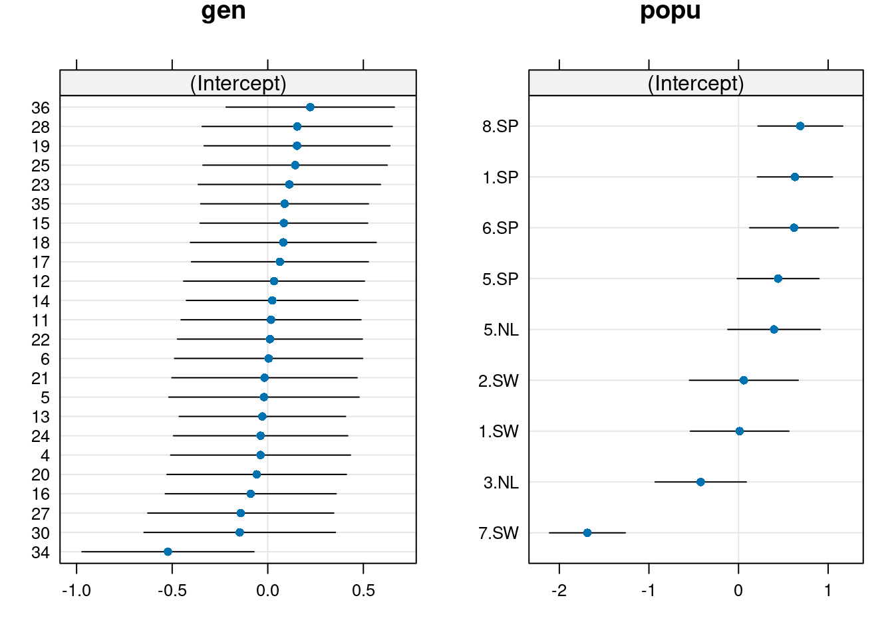

Chapitre 17 GLMM Poisson-lognormale
Une deuxième option pour une distribution où la variance augmente plus rapidement avec la moyenne est la distribution Poisson-lognormale. Ce modèle place effectivement une priorité lognormale sur \(εi\).
Une distribution Poisson-lognormale avec une moyenne de \(µ\) et une variance antérieure lognormale de \(σ2\) a une variance:
\(var(y) = µ + µ2 [exp(σ2) - 1]\)
En revanche, nous avons vu que la distribution binomiale négative (Poisson-gamma) était donné par:
\(var(y) = µ + µ2/k\)
En générale, la variance \(σ2\) dans la distribution Poisson-lognormal dépendra du niveau de regroupement que nous sélectionnons (i.e. au niveau individuel, génotype ou de la population). Donc, le modèle de Poisson-lognormal nous permet d’assigner l’agrégation observée à différentes sources d’hétérogénéité.
Pour mettre en œuvre le effet aléatoire au niveau de l’observation, nous allons l’évaluer au niveau individuel. Pour ce faire, il suffit de placer un effet aléatoire au niveau des observations dans la formule du modèle.
Voir Harrison (2014) pour plus de détails https://doi.org/10.7717/peerj.616.
Pour ce faire, nous créons tout d’abord une variable nommée X:
# GLMM Poisson-lognormale
# Cette variable est déjà dans vos données 'dat.tf', mais
# voici comment la créer.
dat.tf$X <- 1:nrow(dat.tf)On traite la surdispersion en ajoutant l’effet (1|X) dans la formule:
# Tenir compte de la surdispersion
mpl1 <- glmer(total.fruits ~ nutrient * amd + rack + status +
(1 | X) + (1 | popu) + (1 | gen), data = dat.tf, family = "poisson",
control = glmerControl(optimizer = "bobyqa"))On teste finalement pour la présence de surdispersion:
# Surdispersion?
overdisp_fun(mpl1)## chisq ratio p logp
## 1.775360e+02 2.886764e-01 1.000000e+00 -3.754786e-73# Le rapport est maintenant conforme avec notre critère,
# soit < 1Le rapport est maintenant conforme avec notre critère, soit < 1!
17.1 Intercepts aléatoires
Maintenant que nous avons la distribution d’erreur appropriée, nous pouvons tester l’importance des interceptes aléatoires (pour population et génotype) en comparant des modèles nichés avec et sans les effets aléatoires d’intérêt en utilisant soit:
1. L’approche théorique d’information (tel que le Critère d’Information d’Akaike; AIC), qui, comme nous l’avons vu apres examine plusieurs hypothèses concurrentes (modèles) simultanément pour identifier le modèle avec le pouvoir prédictif le plus élevé compte tenu des données. Nous allons encore une fois utiliser le AICc pour corriger les petites tailles d’échantillon.
2. L’approche fréquentiste (test d’hypothèse nulle traditionnelle), où deux modèles nichés sont comparés en utilisant le tests de rapport de vraisemblance de la fonction anova(). Il est important de noter qu’avec cette approche, nous testons une hypothèse nulle d’une variance de zéro, mais étant donné que nous ne pouvons pas avoir un écart négatif, nous testons le paramètre à la limite de sa région réalisable. Par conséquent, la valeur de p rapporté est environ le double de ce qu’elle devrait être (c. nous avons tronquée la moitié des valeurs possibles ; celles qui tombent en dessous de 0).
# popu seulement
mpl1.popu <- glmer(total.fruits ~ nutrient * amd + rack + status +
(1 | X) + (1 | popu), data = dat.tf, family = "poisson",
control = glmerControl(optimizer = "bobyqa"))
# gen seulement
mpl1.gen <- glmer(total.fruits ~ nutrient * amd + rack + status +
(1 | X) + (1 | gen), data = dat.tf, family = "poisson", control = glmerControl(optimizer = "bobyqa"))
# Approche AICc
ICtab(mpl1, mpl1.popu, mpl1.gen, type = c("AICc"))## dAICc df
## mpl1 0.0 10
## mpl1.popu 2.0 9
## mpl1.gen 16.1 9# Approche fréquentiste (Likelihood Ratio Test)
anova(mpl1, mpl1.popu)## Data: dat.tf
## Models:
## mpl1.popu: total.fruits ~ nutrient * amd + rack + status + (1 | X) + (1 | popu)
## mpl1: total.fruits ~ nutrient * amd + rack + status + (1 | X) + (1 | popu) + (1 | gen)
## npar AIC BIC logLik deviance Chisq Df Pr(>Chisq)
## mpl1.popu 9 5017.4 5057.4 -2499.7 4999.4
## mpl1 10 5015.4 5059.8 -2497.7 4995.4 4.0639 1 0.04381 *
## ---
## Signif. codes: 0 '***' 0.001 '**' 0.01 '*' 0.05 '.' 0.1 ' ' 1anova(mpl1, mpl1.gen)## Data: dat.tf
## Models:
## mpl1.gen: total.fruits ~ nutrient * amd + rack + status + (1 | X) + (1 | gen)
## mpl1: total.fruits ~ nutrient * amd + rack + status + (1 | X) + (1 | popu) + (1 | gen)
## npar AIC BIC logLik deviance Chisq Df Pr(>Chisq)
## mpl1.gen 9 5031.5 5071.5 -2506.8 5013.5
## mpl1 10 5015.4 5059.8 -2497.7 4995.4 18.177 1 2.014e-05 ***
## ---
## Signif. codes: 0 '***' 0.001 '**' 0.01 '*' 0.05 '.' 0.1 ' ' 1Notez que le modèle sans l’intercept aléatoire pour génotype est à moins de deux unités AICc du modèle complet, ce qui indique que les deux modèles sont tout aussi plausibles (i.e. peu de soutien pour inclure un intercept aléatoire pour le génotype). Toutefois, lorsque nous utilisons la comparaison de vraisemblance de modèles nichés (anova()), et corrigeons pour les valeurs p gonflés par un facteur de 2, nous trouvons que dans les deux cas, p <0,05. Donc le modèle avec les deux effets aléatoires (mpl1) est sélectionné.
17.2 Représentation graphique des paramètres du modèle
Maintenant que nous avons choisi notre modèle, visualisons les paramètres du modèle.
Peut être obtenu en utilisant la fonction coefplot2()de la librairie coefplot2:
Notez: Cette librairie n’est pas sur le CRAN! On utilise la librairie remotes pour l’installer à partir de GitHub.
# Visualisons les paramètres du modèle
# Cette librairie n'est pas sur le CRAN! On utilise la
# librairie `remotes` pour l'installer à partir de GitHub.
if (!require("coefplot2")) remotes::install_github("palday/coefplot2",
subdir = "pkg")## Loading required package: coefplot2## Loading required package: codalibrary(coefplot2)# Effets aléatoires
coefplot2(mpl1, ptype = "vcov", intercept = TRUE, main = "Random effect variance")
Ici, nous pouvons voir que certains effets aléatoires présentent une plus grande variance que d’autres.
La variance des effets aléatoires (σ2i) représente la variance moyenne des effets aléatoires du modèle. Puisque cette variance reflète la variance “moyenne” des effets aléatoires pour les modèles mixtes, elle est également appropriée pour les modèles avec des structures d’effets aléatoires plus complexes, comme les pentes aléatoires ou les effets aléatoires imbriqués.
# Effets fixes
coefplot2(mpl1, intercept = TRUE, main = "Fixed effect coefficient")La variance des effets fixes (σ2f) est la variance de la matrice-multiplication β∗X (vecteur de paramètres par matrice de modèle)
Notez: Les barres d’erreur sont visibles seulement pour les effets fixes, car glmer() ne modélise pas d’incertitude pour les effets aléatoires.
Visualisation des effets aléatoires
Vous pouvez extraire les effets aléatoires en utilisant la fonction ranef() et les tracer en utilisant un dotplot() de la librairie lattice.
On constate une variation inter-population:
- Les populations espagnoles (SP) ont des valeurs plus élevées que les populations suédoises (SW) et néerlandaises (NL)
On constate une faible variation inter-génotype :
- Les différences entre les génotypes semblent induites par le génotype 34
# dotplot code
pp <- list(layout.widths = list(left.padding = 0, right.padding = 0),
layout.heights = list(top.padding = 0, bottom.padding = 0))
r2 <- ranef(mpl1, condVar = TRUE)
d2 <- dotplot(r2, par.settings = pp)
grid.arrange(d2$gen, d2$popu, nrow = 1)